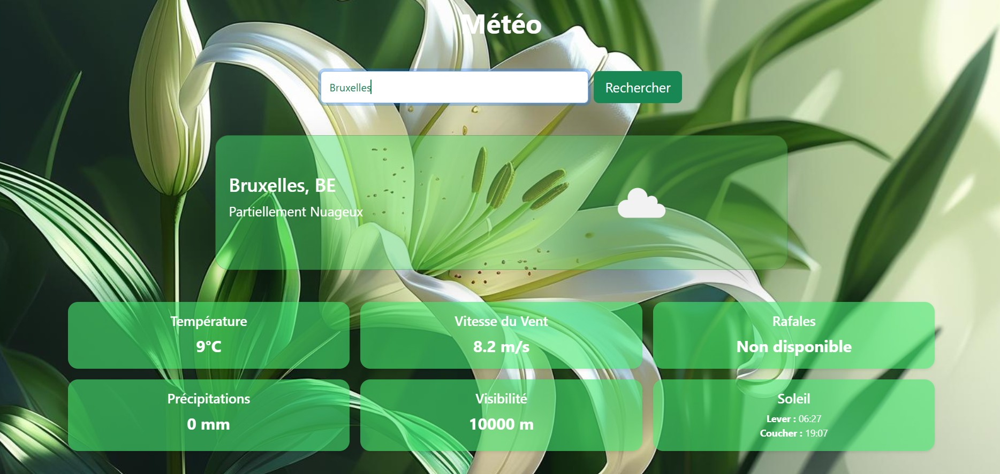

Mes projets
Projets réalisés en formation, d'apprentissage, et conceptuels

Site e-commerce fleuriste
Plateforme e-commerce de vente de fleurs simple pour une personnalisation de bouquet entier, avec catalogue produits dynamique et base des données.

Weather App
Mon premier projet en React. Application météo permettant de consulter les conditions météorologiques en temps réel selon la ville souhaitée, via une API weather.

ApiWilder
Projet de hackathon : un site dédié à une ruche, avec un système de meilleures donations pour soutenir les initiatives et suivre l'impact des contributions.

To Do List
Une To Do List simple avec un visuel moderne pour créer de nouvelles tâches, cocher lorsqu'elles sont finies ou bien les supprimer

Landing page de chaussures
Page de destination moderne et responsive pour la vente de chaussures, avec un design épuré et attrayant.

Application d'hôtellerie pour la gestion des départements
Cette application facilite la communication entre les différents départements d'un hôtel. Elle offre également des fonctionnalités pour les responsables et leurs employés, afin de faciliter la gestion administrative. Photo prise sur freepick.com
Site e-commerce fleuriste
Plateforme e-commerce de vente de fleurs avec personnalisation de bouquet entier. Le site propose un catalogue produits dynamique connecté à une base de données, permettant à l'utilisateur de composer son bouquet et de passer commande en ligne.
- Catalogue produits dynamique
- Personnalisation de bouquet
- Base de données
- Interface responsive
ApiWilder
Projet réalisé en hackathon. Site dédié à une ruche avec un système de donations permettant de soutenir des initiatives environnementales et de suivre l'impact des contributions en temps réel.
- Projet hackathon
- Système de donations
- Suivi de l'impact des contributions
- Travail en équipe
To Do List
Application de gestion de tâches avec un visuel moderne et épuré. L'utilisateur peut créer de nouvelles tâches, les cocher comme terminées ou les supprimer.
- Ajout de tâches
- Marquage comme terminé
- Suppression de tâches
- Design minimaliste
Landing page de chaussures
Page de destination moderne et responsive pour la vente de chaussures. Design épuré et attractif pensé pour convertir les visiteurs, avec une mise en avant visuelle du produit.
- Design responsive
- Mise en avant produit
- HTML / CSS vanilla
- Page de destination orientée conversion
Application d'hôtellerie
Application facilitant la communication entre les différents départements d'un hôtel. Elle offre des fonctionnalités pour les responsables et leurs employés afin de faciliter la gestion administrative. Projet TFE — Septembre 2026.
- Gestion multi-départements
- Rôles responsables / employés
- Communication interne
- TFE Septembre 2026